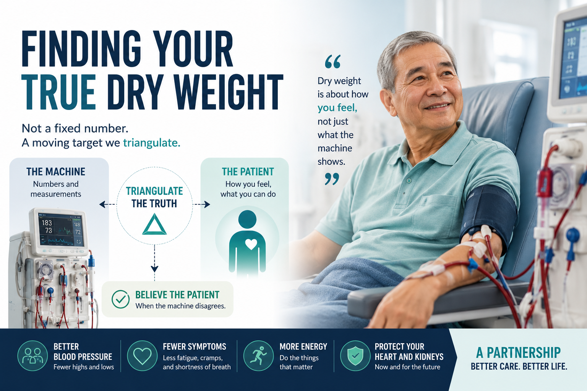

What "dry weight" actually is Ano talaga ang "dry weight" Unsa gyud ang "dry weight" Nanu mu ing "dry weight"
Your dry weight (the goal weight after dialysis) is the lowest weight you can safely reach where you still feel well, breathe easily, and your blood pressure stays normal — without cramping or crashing. It is not the weight your body "should" be. It is the weight where you have just the right amount of fluid left in you: not too much, not too little. Ang iyong dry weight (ang target na timbang pagkatapos ng dialysis) ay ang pinakamababang timbang na ligtas mong maabot habang maganda pa rin ang iyong pakiramdam, madali kang makahinga, at normal ang iyong presyon — nang hindi pinupulikat o hinihimatay. Hindi ito ang timbang na "dapat" sa katawan mo. Ito ang timbang kung saan tama lang ang dami ng tubig na natitira sa iyo: hindi sobra, hindi kulang. Ang imong dry weight (ang target nga timbang human sa dialysis) mao ang pinakaubos nga timbang nga maluwas nimong maabot samtang maayo gihapon ang imong pamati, sayon ka makaginhawa, ug normal ang imong presyon — nga dili magkalambre o makuyapan. Dili kini ang timbang nga "angay" sa imong lawas. Mao kini ang timbang diin husto lang ang gidaghanon sa tubig nga nahibilin nimo: dili sobra, dili kulang. Ing kekang dry weight (ing target a timbang kaibat ning dialysis) ya ing pekamababang timbang a ligtas mung miras kabang masanting ka pa, malagua kang makaginewa, at normal ing kekang presyon — alang lambri o kapagal. E ya ini ing timbang a "dapat" king katawan mu. Iti ya ing timbang nung nu husto mu ing dami ning danum a mitagan keka: ali sobra, ali kulang.
Where the fluid actually sits Saan talaga nakaupo ang tubig Asa gyud nahimutang ang tubig Nokarin talaga makalukluk ing danum
The extra water in your body lives in two places. A small amount sits inside your blood vessels (the intravascular space) — this is the water your heart pumps and your blood pressure can "feel." A much larger amount sits in the tissues all over your body (the interstitial space) — the puffiness in your legs, your face, your hands. When you step on the scale, it weighs the total of both. But your heart and your blood pressure only feel the small intravascular part. Ang sobrang tubig sa katawan mo ay nasa dalawang lugar. Kakaunti ang nasa loob ng iyong mga ugat (ang intravascular space) — ito ang tubig na binobomba ng puso mo at "nararamdaman" ng iyong presyon. Mas marami naman ang nasa mga tisyu sa buong katawan mo (ang interstitial space) — ang pamamaga sa binti, mukha, at kamay mo. Kapag tumayo ka sa timbangan, tinitimbang nito ang kabuuan ng dalawa. Pero ang puso mo at presyon mo ay nararamdaman lang ang maliit na intravascular na bahagi. Ang sobra nga tubig sa imong lawas naa sa duha ka dapit. Gamay ra ang naa sa sulod sa imong mga ugat (ang intravascular space) — mao kini ang tubig nga gibomba sa imong kasingkasing ug "mabati" sa imong presyon. Mas daghan ang naa sa mga tisyu sa tibuok nimong lawas (ang interstitial space) — ang panghupong sa imong batiis, nawong, ug kamot. Kon motindog ka sa timbangan, gitimbang niini ang kinatibuk-an sa duha. Apan ang imong kasingkasing ug presyon makabati lang sa gamay nga intravascular nga bahin. Ing sobrang danum king kekang katawan atiu king aduang dako. Ditak ya ing atiu king lalam ning kekang ugat (ing intravascular space) — iti ya ing danum a bobombahan ning kekang puso at "daramdaman" ning kekang presyon. Mas dakal ya ing atiu king mga tisyu king mabilug a kekang katawan (ing interstitial space) — ing pamamaga king bitis, lupa, at gamat mu. Nung tutuki ka king timbangan, titimbangan na ing mabilug da reng adua. Dapot ing kekang puso at presyon, daramdaman da mu ing ditak a intravascular a parti.
![A two-compartment diagram of body fluid. A small intravascular chamber on the left, drawn inside a blood vessel, connects through a narrow refill valve to a much larger interstitial chamber on the right representing the body tissues. A dialysis ultrafiltration straw draws fluid out of the small intravascular chamber. The refill valve lets fluid move from the large tissue chamber into the small blood chamber only slowly, so the small chamber empties faster than it can refill. Navy and teal palette, mobile-readable labels for intravascular, interstitial, refill valve, and ultrafiltration.](../images/dry-weight-determination-01-two-compartment.webp)
The refilling rate — the one idea that explains everything Ang bilis ng pagpuno — ang isang ideya na nagpapaliwanag sa lahat Ang katulin sa pagpuno — ang usa ka ideya nga nagpasabot sa tanan Ing bilis ning pamamatban — ing metung a ideya a magpalino king anggang
During dialysis, the machine pulls water out of your blood vessels (this is called ultrafiltration). As that small blood chamber empties, fluid from your tissues has to seep back in to refill it. The catch: that refilling is slow. It is the rate-limiting step — the slowest part of the whole process, and the part that sets the pace for everything else. If the machine pulls faster than your tissues can refill the blood, your blood pressure drops, you feel dizzy or crash, and your muscles cramp — even though there is still plenty of extra water sitting in your tissues. Sa panahon ng dialysis, hinihila ng makina ang tubig palabas ng iyong mga ugat (tinatawag itong ultrafiltration). Habang nauubos ang maliit na blood chamber, kailangang dahan-dahang bumalik ang tubig mula sa iyong mga tisyu para muli itong mapuno. Ang problema: mabagal ang pagpunong iyon. Ito ang rate-limiting step — ang pinakamabagal na bahagi ng buong proseso, at ang bahagi na nagtatakda ng bilis ng lahat. Kung mas mabilis humila ang makina kaysa sa kayang ibalik ng iyong mga tisyu, bumababa ang iyong presyon, nahihilo ka o hinihimatay, at pumupulikat ang iyong mga kalamnan — kahit na marami pang sobrang tubig na nasa iyong mga tisyu. Atol sa dialysis, ang makina mokuha ug tubig gikan sa imong mga ugat (gitawag kining ultrafiltration). Samtang nahurot ang gamay nga blood chamber, kinahanglan hinay-hinay nga mobalik ang tubig gikan sa imong mga tisyu aron pun-on kini pag-usab. Ang problema: hinay kana nga pagpuno. Mao kini ang rate-limiting step — ang pinakahinay nga bahin sa tibuok proseso, ug ang bahin nga nagtakda sa katulin sa tanan. Kon mas paspas mokuha ang makina kaysa sa makaya sa imong mga tisyu nga ibalik, mokunhod ang imong presyon, malipong ka o makuyapan, ug magkalambre ang imong mga kaunoran — bisan pa daghan pa ang sobra nga tubig sa imong mga tisyu. Kabang dialysis, sisilatan ning makina ing danum palual ning kekang ugat (auman yang ultrafiltration). Kabang mauubus ne ing ditak a blood chamber, kailangan a marimla mung mibalik ing danum manibat king kekang mga tisyu ban miyatban ya pasibayu. Ing problema: marimla ya itang pamamatban. Iti ya ing rate-limiting step — ing pekamarimla a parti ning mabilug a proseso, at ing parti a magtakda king bilis ning anggang. Nung mas malagua ya silatan ning makina kesa king kayang ibalik da reng kekang tisyu, kukulang ya ing kekang presyon, malilipung ka o makuyapan, at lalambri la reng kekang kalamnan — agyang dakal pa ing sobrang danum king kekang mga tisyu.
The key idea of this whole guide Ang pangunahing ideya ng buong gabay na ito Ang pangunahing ideya sa tibuok niini nga giya Ing pekamasalese a ideya ning mabilug a giya ini
The lag between how fast dialysis empties your blood and how slowly your tissues refill it is the single reason patients crash above their true dry weight and cramp below it. Hold on to this one idea — everything else in this guide is built on it. It is also why two patients can carry the exact same extra fluid yet need very different dialysis: refill rates differ from person to person, and even from day to day. Ang pagkahuli sa pagitan ng bilis ng pag-ubos ng dialysis sa iyong dugo at ang bagal ng pagpuno ng iyong mga tisyu ang iisang dahilan kung bakit nahihimatay ang mga pasyente kahit nasa itaas pa ng tunay nilang dry weight at pumupulikat kapag nasa ibaba na nito. Tandaan mo ang isang ideyang ito — lahat ng iba pa sa gabay na ito ay nakabatay rito. Ito rin ang dahilan kung bakit dalawang pasyenteng may parehong sobrang tubig ay maaaring mangailangan ng ibang-ibang dialysis: iba-iba ang bilis ng pagpuno sa bawat tao, at kahit araw-araw. Ang kalangan tali sa katulin sa paghurot sa dialysis sa imong dugo ug ang kahinay sa pagpuno sa imong mga tisyu mao ang bugtong rason nganong makuyapan ang mga pasyente bisan naa pa sa ibabaw sa ilang tinuod nga dry weight ug magkalambre kon naa na sa ubos niini. Hupti kini nga usa ka ideya — ang tanan pa sa niini nga giya gitukod niini. Mao usab kini ang rason nganong duha ka pasyente nga managsama ug sobra nga tubig mahimong manginahanglan ug lahi kaayo nga dialysis: lahi ang katulin sa pagpuno sa matag tawo, ug bisan adlaw-adlaw. Ing pagkatagal ula ning bilis ning pamaubus ning dialysis king kekang daya at ing rimla ning pamamatban da reng kekang tisyu ya ing metung a sangkan nung bakit makuyapan la reng pasyente agyang atiu la pa king babo ning tutung karelang dry weight at lalambri la nung atiu na king lalam nita. Tandanan me ing metung a ideya ini — ing anggang aliwa king giya ini, mibase ya kaniti. Iti mu naman ing sangkan nung bakit aduang pasyente a parehu ing sobrang danum, mangailangan la pamu aliwang dialysis: aliwa-aliwa ing bilis ning pamamatban king balang tau, at agyang aldo-aldo.
Why dry weight keeps drifting Bakit patuloy na nagbabago ang dry weight Nganong padayon nga nagbalhin ang dry weight Bakit terus yang mayayalis ing dry weight
Dry weight is not a fixed number you set once. It is a moving target. It drifts because your real body changes underneath the fluid: Ang dry weight ay hindi isang nakapirming numero na itinatakda mo nang minsan. Isa itong gumagalaw na target. Nagbabago ito dahil nagbabago ang iyong tunay na katawan sa ilalim ng tubig: Ang dry weight dili usa ka pirmi nga numero nga imong gitakda kausa lang. Usa kini ka naglihok nga target. Nagbalhin kini tungod kay nausab ang imong tinuod nga lawas ilalom sa tubig: Ing dry weight e ya metung a pirming numero a tatakdan mu mu pamimetung. Metung yang gugulisad a target. Mayayalis ya uli ning mayayalis ing kekang tutung katawan king lalam ning danum:
- Muscle gained or lost. Real tissue weight that the scale cannot tell apart from water. Kalamnang nadagdag o nawala. Tunay na timbang ng tisyu na hindi mapagkikilala ng timbangan sa tubig. Kaunoran nga nadugang o nawala. Tinuod nga timbang sa tisyu nga dili mailhan sa timbangan gikan sa tubig. Kalamnan a midagdag o mewala. Tutung timbang ning tisyu a e abalu ning timbangan king danum.
- A change in appetite — eating more or less than before. Pagbabago sa gana sa pagkain — mas marami o mas kaunti kaysa dati. Kabag-ohan sa gana sa pagkaon — mas daghan o mas gamay kaysa kaniadto. Pamiyalis king gana king pamangan — mas dakal o mas ditak kesa kanita.
- Inflammation or illness — infections and chronic inflammation shift fluid and burn muscle. Pamamaga o sakit — ang impeksyon at matagalang pamamaga ay naglilipat ng tubig at sumisira ng kalamnan. Hubag o sakit — ang impeksyon ug taas nga panahon nga hubag mobalhin sa tubig ug moguba sa kaunoran. Pamamaga o sakit — ding impeksyon at matagal a pamamaga, mililipat la danum at sisira lang kalamnan.
- Edema redistribution — where the swelling settles can shift with how you sit, stand, or lie down. Paglilipat ng pamamaga (edema) — ang kung saan napupunta ang pamamaga ay nagbabago depende sa pag-upo, pagtayo, o paghiga mo. Pagbalhin sa panghupong (edema) — ang dapit diin mohusay ang panghupong mausab depende sa imong paglingkod, pagtindog, o paghigda. Pamililipat ning pamamaga (edema) — ing nokarin mako ing pamamaga, mayayalis ya agpang king kekang pamaglukluk, pamagtalakad, o pamagega.
- Season and salt. Hotter weather and saltier food change how much fluid your body holds between sessions. Panahon at asin. Ang mas mainit na panahon at mas maalat na pagkain ay nagbabago sa dami ng tubig na hawak ng katawan mo sa pagitan ng mga session. Panahon ug asin. Ang mas init nga panahon ug mas parat nga pagkaon mousab sa gidaghanon sa tubig nga gihuptan sa imong lawas tali sa mga session. Panaun at asin. Ing mas mapali a panaun at mas maalat a pamangan, mayayalis da ing dami ning danum a kakaptan ning kekang katawan ula da reng session.
- An intercurrent illness — a hospital stay, a flu, a new heart problem can move your dry weight in days. Biglaang sakit — ang pagkaka-ospital, trangkaso, o bagong problema sa puso ay maaaring magbago ng dry weight mo sa loob ng ilang araw. Kalit nga sakit — ang pag-ospital, trangkaso, o bag-ong problema sa kasingkasing mahimong mobalhin sa imong dry weight sulod sa pipila ka adlaw. Biglang sakit — ing pamag-ospital, trangkaso, o bayung problema king puso, ayalis da ing kekang dry weight king loob ning pilang aldo.
Because all of this keeps moving, your dry weight cannot be set once and forgotten. It has to be re-checked — and the rest of this guide is about how your team finds it, again and again, without relying on any single tool. Dahil patuloy na gumagalaw ang lahat ng ito, hindi puwedeng itakda ang iyong dry weight nang minsan at kalimutan na. Kailangan itong muling suriin — at ang natitirang bahagi ng gabay na ito ay tungkol sa kung paano ito hinahanap ng iyong team, paulit-ulit, nang hindi umaasa sa kahit isang kasangkapan lamang. Tungod kay padayon nga naglihok kining tanan, dili mahimong itakda ang imong dry weight kausa lang ug kalimtan na. Kinahanglan kining susihon pag-usab — ug ang nahibilin niini nga giya mahitungod sa unsaon kini pagpangita sa imong team, balik-balik, nga dili magsalig sa bisan usa lang ka himan. Uli ning anggang ini terus yang gugulisad, e ya malyaring takdan ing kekang dry weight pamimetung at kalinguan na. Kailangan yang asuri pasibayu — at ing mitagan king giya ini, tungkul ya king makananung pananam na ning kekang team, paulit-ulit, alang panaya king agyang metung mung kasangkapan.
The triangulation model — convergence, not a single verdict Ang triangulation model — pagsasama-sama, hindi iisang hatol Ang triangulation model — panag-uyon, dili usa ka hukom Ing triangulation model — pamitatagun, e metung a atul
Here is the heart of this guide. Dry weight is not a number that any single machine, test, or symptom can hand you. Every signal we have is imperfect: each one is right sometimes and wrong sometimes, and each fails in its own way. So instead of trusting one of them, your team does something smarter — triangulation. They line up several imperfect signals and look for where they agree. No single signal gets a veto. The convergence of the methods — the place where the symptoms, the blood pressure, the exam, and the monitors all point to the same answer — is the answer. Narito ang puso ng gabay na ito. Ang dry weight ay hindi isang numerong maibibigay sa iyo ng kahit isang makina, test, o sintomas lamang. Ang bawat senyales na mayroon tayo ay hindi perpekto: bawat isa ay minsang tama at minsang mali, at bawat isa ay nagkakamali sa sariling paraan. Kaya sa halip na magtiwala sa isa lamang, may mas matalinong ginagawa ang iyong team — triangulation. Pinagsasama-sama nila ang ilang hindi perpektong senyales at hinahanap kung saan sila nagkakasundo. Walang isang senyales ang may kapangyarihang mag-veto. Ang pagsasama-sama ng mga pamamaraan — ang lugar kung saan ang sintomas, presyon, eksaminasyon, at mga monitor ay tumuturo lahat sa parehong sagot — iyon ang sagot. Ania ang kasingkasing niini nga giya. Ang dry weight dili usa ka numero nga mahatag kanimo sa bisan usa lang ka makina, test, o simtomas. Ang matag senyales nga aduna kita dili hingpit: ang matag usa husto usahay ug sayop usahay, ug ang matag usa mapakyas sa kaugalingong paagi. Mao nga imbes nga mosalig sa usa lang, ang imong team naghimo ug mas maalamon — triangulation. Gilaray nila ang pipila ka dili hingpit nga senyales ug gipangita kon asa sila magkauyon. Walay usa ka senyales nga makaveto. Ang panag-uyon sa mga pamaagi — ang dapit diin ang simtomas, presyon, eksamen, ug mga monitor tanan motudlo sa managsama nga tubag — mao ang tubag. Oini ing pusu ning giya ini. Ing dry weight e ya metung a numerung abie keka ning agyang metung mung makina, test, o sintomas. Ing balang senyas a atin tamu e ya perpektu: ing balang metung, malyaring tama ya minsan at mali ya minsan, at ing balang metung, magkamali ya king sarili nang paralan. Anya imbes a manaya king metung mu, atin mas masalese a daraptan ning kekang team — triangulation. Pisasama-sama da reng pilang e perpektung senyas at panintunan da nung nokarin la magkasundu. Alang metung a senyas a atin kapangyarian a mag-veto. Ing pamitatagun da reng paralan — ing dake nung nu ing sintomas, presyon, eksaminasyun, at mga monitor, mituturo lang anggang king parehung pekibat — iyan ya ing pekibat.
This is why the title of this guide matters: triangulation over precision. Chasing one "precise" number from one tool is exactly the trap that gets patients hurt. The honest, safer path is to gather several rough-but-real signals and converge on where they meet. Ito ang dahilan kung bakit mahalaga ang pamagat ng gabay na ito: triangulation higit sa pagiging eksakto. Ang paghahabol sa isang "eksaktong" numero mula sa isang kasangkapan ang mismong bitag na nakakasakit sa mga pasyente. Ang tapat at mas ligtas na landas ay tipunin ang ilang magaspang-pero-totoong senyales at magsama-sama kung saan sila nagtatagpo. Mao kini ang rason nganong importante ang ulohan niini nga giya: triangulation labaw sa katukma. Ang paggukod sa usa ka "tukma" nga numero gikan sa usa ka himan mao gyud ang lit-ag nga makapasakit sa mga pasyente. Ang matinud-anon ug mas luwas nga dalan mao ang pagtigom sa pipila ka bagis-apan-tinuod nga senyales ug pag-uyon kon asa sila magkita. Iti ya ing sangkan nung bakit maulaga ing pamagat ning giya ini: triangulation labas king pamagi-egsaktu. Ing pamanugis king metung a "egsaktung" numero manibat king metung a kasangkapan ya mismu ing patibung a makapanakit karing pasyente. Ing tapat at mas ligtas a dalan ya ing pamanipun da reng pilang magaspang-dapot-tutung senyas at pamitatagun nung nokarin la mitatagpu.
![A hub-and-spoke triangulation diagram. At the center sits a node labeled DRY WEIGHT. Six spokes radiate outward to six signals, each with a small reliability bar: patient symptoms, inter-dialytic and intra-HD blood pressure, physical exam, Relative Blood Volume (RBV) monitoring, lung ultrasound B-lines and IVC, and bioimpedance or BCM overhydration. The blood-pressure and lung-ultrasound spokes show fuller reliability bars; the bioimpedance spoke shows a thin trend-only bar. The image conveys that the answer emerges from where the spokes agree, not from any single spoke. Navy and teal palette, mobile-readable labels.](../images/dry-weight-determination-02-triangulation.webp)
The six signals — and how far you can trust each one Ang anim na senyales — at gaano mo kapagkakatiwalaan ang bawat isa Ang unom ka senyales — ug unsa kalayo nimo masaligan ang matag usa Ding anam a senyas — at makananu mu apaintulutan ing balang metung
| Signal Senyales Senyales Senyas | What it tells you Ano ang sinasabi nito Unsa ang gisulti niini Nanu ing sasabian na | Reliability Pagkamapagkakatiwalaan Pagkakasaligan Pamagkapaintulutan | Main failure mode Pangunahing paraan ng pagkakamali Nag-unang paagi sa pagkapakyas Pekamasalese a paralan ning pagkamali |
|---|---|---|---|
| Symptoms (cramps, dizziness, breathlessness) Mga sintomas (pulikat, pagkahilo, hirap huminga) Mga simtomas (kalambre, kalipong, kalisod sa pagginhawa) Mga sintomas (lambri, lipung, kahirapan king pamanginewa) | Real-time tolerance — how well your body is handling treatment right now Real-time na pagtitiis — kung gaano kahusay kinakaya ng katawan mo ang gamutan ngayon Real-time nga pag-antos — unsa kaayo gikaya sa imong lawas ang tambal karon Real-time a pamagtiis — makananu kayang kakayanan ning kekang katawan ing lunas ngeni | High value, low specificity Mataas ang halaga, mababa ang specificity Taas ang bili, ubos ang specificity Matas ya ing alaga, mababa ya ing specificity | Confounded by glucose, anemia, sepsis Nalilito ng glucose, anemia, sepsis Malibog tungod sa glucose, anemia, sepsis Malilingu uli ning glucose, anemia, sepsis |
| Inter-dialytic & intra-HD blood pressure Presyon ng dugo sa pagitan at sa loob ng HD Presyon sa dugo tali ug sulod sa HD Presyon ning daya ula at king loob ning HD | Volume-dependent high blood pressure; crash risk Mataas na presyon na nakadepende sa dami ng tubig; panganib na hilo o himatay Taas nga presyon nga nagsalig sa gidaghanon sa tubig; risgo nga makuyapan Matas a presyon a depende king dami ning danum; panganib king kuyap | Strong Malakas Lig-on Masikan | Antihypertensives mask it Itinatago ito ng mga gamot sa presyon (antihypertensives) Gitabonan kini sa mga tambal sa presyon (antihypertensives) Tatakpan na ning mga gamot king presyon (antihypertensives) |
| Physical exam (JVP, edema, crackles) Pisikal na eksaminasyon (JVP, edema, crackles) Pisikal nga eksamen (JVP, edema, crackles) Pisikal a eksaminasyun (JVP, edema, crackles) | Gross overload — large amounts of extra fluid Malaking sobra ng tubig sa katawan Dako nga sobra nga tubig sa lawas Maragul a sobra ning danum king katawan | Cheap, fast Mura, mabilis Barato, paspas Mura, malagua | Insensitive until volume is large Hindi tumutugon hangga't hindi pa malaki ang tubig Dili motubag hangtod nga dili pa dako ang tubig E tutugun anggang e pa maragul ing danum |
| Relative Blood Volume (RBV) monitoring Relative Blood Volume (RBV) monitoring Relative Blood Volume (RBV) monitoring Relative Blood Volume (RBV) monitoring | Refill adequacy during HD — whether your tissues are keeping up Kasapatan ng pagpuno habang HD — kung nakakahabol ang iyong mga tisyu Kaigo sa pagpuno atol sa HD — kon nakaapas ba ang imong mga tisyu Kasapatan ning pamamatban kabang HD — nung makakahabul la reng kekang tisyu | Good trend tool Magandang kasangkapan para sa trend Maayo nga himan para sa trend Masanting a kasangkapan para king trend | Flat curves are ambiguous Malabo ang ibig sabihin ng patag na mga kurba Dili klaro ang patag nga mga kurba Malabu ing kabaldugan da reng patag a kurba |
| Lung ultrasound B-lines / IVC Lung ultrasound B-lines / IVC Lung ultrasound B-lines / IVC Lung ultrasound B-lines / IVC | Extravascular lung water — fluid backing up into the lungs Tubig sa labas ng ugat sa baga — tubig na umaapaw papunta sa baga Tubig gawas sa ugat sa baga — tubig nga moawas paingon sa baga Danum king kilual ning ugat king baga — danum a uminaway papunta king baga | Most sensitive for overload Pinakasensitibo sa sobrang tubig Pinakasensitibo sa sobra nga tubig Pekasensitibu king sobrang danum | Operator-dependent; not always available Nakadepende sa gumagamit; hindi laging available Nagsalig sa naggamit; dili kanunay anaa Depende king gagamit; e pirmi atin |
| Bioimpedance / BCM (OH) Bioimpedance / BCM (OH) Bioimpedance / BCM (OH) Bioimpedance / BCM (OH) | Overhydration (OH) estimate — a guess at how much extra water you carry Tantiya ng sobrang tubig (overhydration, OH) — hula sa dami ng sobrang tubig mo Banabana sa sobra nga tubig (overhydration, OH) — usa ka tag-an sa gidaghanon sa imong sobra nga tubig Tantiya ning sobrang danum (overhydration, OH) — hula king dami ning kekang sobrang danum | TREND ONLY — see the bioimpedance section TREND LAMANG — tingnan ang seksyon tungkol sa bioimpedance TREND LANG — tan-awa ang seksyon bahin sa bioimpedance TREND MU — lawan me ing seksyun tungkul king bioimpedance | Inaccurate in edema, abnormal BMI, amputees Hindi tumpak sa edema, hindi normal na BMI, mga putol ang paa o kamay (amputees) Dili tukma sa edema, dili normal nga BMI, mga giputlan ug paa o kamot (amputees) E tama king edema, e normal a BMI, mga miputul a bitis o gamat (amputees) |
Start with the tool that models this thinking Magsimula sa kasangkapang gumagaya sa paraan ng pag-iisip na ito Sugdi sa himan nga nagsundog niini nga panghunahuna Mumuna ka king kasangkapan a tutuladan ne ini a pamag-isip
The thesis, in one line Ang pangunahing punto, sa isang linya Ang pangunahing punto, sa usa ka linya Ing pekamasalese a punto, king metung a linya
No single tool — including bioimpedance — is accurate enough to set your dry weight by itself. When the machine disagrees with how you feel and what your blood pressure does, believe the patient. Walang kahit isang kasangkapan — kabilang ang bioimpedance — ang sapat na tumpak para magtakda ng iyong dry weight nang mag-isa. Kapag hindi sang-ayon ang makina sa pakiramdam mo at sa ginagawa ng iyong presyon, maniwala sa pasyente. Walay bisan usa ka himan — lakip ang bioimpedance — nga igo katukma aron itakda ang imong dry weight nga mag-inusara. Kon dili mouyon ang makina sa imong pamati ug sa gibuhat sa imong presyon, tuohi ang pasyente. Alang agyang metung a kasangkapan — kayabe ya ing bioimpedance — a sapat ya katama ban takdan na ing kekang dry weight a mag-isa. Nung e magkasundu ing makina king kekang daramdaman at king daraptan ning kekang presyon, paniwalan me ing pasyente.
Bedside Signals You Can Read Without Machines Mga Senyales sa Tabi ng Kama na Mababasa Mo Nang Walang Makina Mga Senyales sa Kiliran sa Higdaanan nga Mabasa Nimo Nga Walay Makina Deng Senyas King Siping ning Paga a Mabasa Mu Alang Makina
Many dialysis units in the Philippines do not have a bioimpedance machine or lung ultrasound. That is fine. The signals that matter most cost nothing — they are written on your blood pressure, your weight, and how you feel. Learn to read them and you already hold the most reliable tools for finding your dry weight (the lowest safe weight after dialysis where you feel well and breathe easily). Maraming dialysis unit sa Pilipinas ay walang bioimpedance machine o lung ultrasound. Ayos lang iyon. Ang mga senyales na pinakamahalaga ay walang halaga — nakasulat ang mga ito sa iyong presyon, sa iyong timbang, at sa kung paano ka nakakaramdam. Matutuhan mong basahin ang mga ito at hawak mo na ang pinakamaaasahang kagamitan para hanapin ang iyong dry weight (ang pinakamababang ligtas na timbang pagkatapos ng dialysis kung saan maganda ang pakiramdam mo at madaling huminga). Daghang dialysis unit sa Pilipinas walay bioimpedance machine o lung ultrasound. Okay ra na. Ang mga senyales nga labing importante walay bili — nasulat kini sa imong presyon, sa imong timbang, ug sa imong pagbati. Pagkat-on sa pagbasa niini ug naa na nimo ang labing kasaligan nga galamiton aron pangitaon ang imong dry weight (ang pinakaubos nga luwas nga timbang human sa dialysis diin maayo ang imong pamati ug sayon ang pagginhawa). Dakal a dialysis unit king Pilipinas alang bioimpedance machine o lung ultrasound. Masalese ya itamu. Deng senyas a pekamahalaga alang alaga — makasulat la king kekang presyon, king kekang timbang, at king nung makananu ka maramdaman. Pagaralan mung basan deng reni at atyu na keka ing pekamatibe a kasangkapan banang panintunan ing kekang dry weight (ing pekababa a ligtas a timbang kaibat ning dialysis nung nu masalese ka maramdaman at malagua kang menginga).
Your blood pressure during dialysis tells a story May kuwento ang iyong presyon habang nasa dialysis Ang imong presyon samtang naa sa dialysis adunay istorya Atin yang kwentu ing kekang presyon kabang atyu ka king dialysis
As the machine pulls fluid out (ultrafiltration), your blood pressure draws one of three shapes across the session. Reading which shape is yours is the single most useful thing you and your team can do without any extra equipment. Habang hinihila ng makina ang likido (ultrafiltration), gumuguhit ng isa sa tatlong hugis ang iyong presyon sa buong session. Ang pagbasa kung aling hugis ang sa iyo ay ang pinakakapaki-pakinabang na bagay na magagawa mo at ng iyong team nang walang anumang dagdag na kagamitan. Samtang gibira sa makina ang likido (ultrafiltration), nagdrowing ang imong presyon ug usa sa tulo ka porma sa tibuok session. Ang pagbasa kung asa nga porma ang imoha mao ang labing mapuslanon nga butang nga mahimo nimo ug sa imong team nga walay dugang nga galamiton. Kabang giguyud ning makina ing danum (ultrafiltration), magdrowing ya metung king atlung porma ing kekang presyon king mabilug a session. Ing pamamasa nung nukarin a porma ing keka iya ing pekamapakinabang a bage a agyu mu at ning kekang team a alang dagdag a kasangkapan.

The "feel" window after dialysis Ang "pakiramdam" na bahagi pagkatapos ng dialysis Ang "pamati" nga bahin human sa dialysis Ing "pamiramdam" a dake kaibat ning dialysis
For the few hours after a session, your body reports back. A deep, flattening exhaustion — what patients call "washout" — usually means you were pushed too far below your dry weight. The opposite signal is just as important: if swelling lingers, your ankles stay puffy, or you cannot lie flat without breathlessness (orthopnea), the session did not go far enough and fluid is still sitting in you. Sa loob ng ilang oras pagkatapos ng session, nag-uulat pabalik ang iyong katawan. Ang malalim na pagkapagod na nakakapanghina — ang tinatawag ng mga pasyente na "washout" — ay kadalasang nangangahulugang naitulak ka nang masyadong malayo pababa sa iyong dry weight. Kasinghalaga rin ang kabaligtarang senyales: kung nananatili ang pamamaga, manas pa rin ang iyong bukung-bukong, o hindi ka makahiga nang patag nang hindi hinihingal (orthopnea), hindi sapat ang session at may likido pa ring nakaupo sa iyo. Sulod sa pipila ka oras human sa session, mag-report balik ang imong lawas. Ang lawom nga kakapoy nga makaluya — ang gitawag sa mga pasyente nga "washout" — kasagaran nagpasabot nga gitukmod ka og sobra ka layo paubos sa imong dry weight. Sama ka importante ang kabaliktaran nga senyales: kung magpabilin ang hubag, manas gihapon ang imong buol-buol, o dili ka makahigda og patag nga walay kakulba sa pagginhawa (orthopnea), wala paigo ang session ug naa pay likido nga nagpabilin nimo. Kilub ning pilang oras kaibat ning session, mag-report ya pasibayu ing kekang katawan. Ing malalam a kapagalan a makapanlupaypay — ing aus da ring pasyente a "washout" — karaniwan na buring sabian mitulak ka king masyadung marayu pababa king kekang dry weight. Kalupa karing alaga ing kasalungat a senyas: nung manatili ya ing pamaga, manas pa la ring kekang bukung-bukung, o ali ka makarakaba a patag nung ali ka mengisnawa (orthopnea), ali ya sapat ing session at atin pang danum a makaupu keka.
Reading your weight gain between sessions correctly Tama ang pagbasa sa iyong pagtaas ng timbang sa pagitan ng sessions Husto nga pagbasa sa imong pagdugang og timbang taliwala sa mga session Tamung pamamasa king kekang pamadagdag timbang king pilatan da ring session
Here is the classic mistake that silently corrupts a dry-weight order: confusing the weight you gain between sessions with a change in your real body. The weight you pick up between dialysis days is almost entirely water you drank, pulled in by the salt (sodium) in your food. That is fluid, not flesh. True tissue weight — actual muscle and fat — changes slowly over weeks, not between Tuesday and Thursday. If a patient loses appetite and quietly loses real tissue, the team may keep removing fluid down to a target that no longer exists, and the patient starts crashing. The fix is simple: when your dry weight seems wrong, ask whether your salt and fluid intake changed, or whether your actual body has changed. Narito ang klasikong pagkakamali na tahimik na sumisira sa dry-weight order: ang pagkalito sa timbang na nadadagdag mo sa pagitan ng sessions sa isang pagbabago sa iyong tunay na katawan. Ang timbang na nakukuha mo sa pagitan ng mga araw ng dialysis ay halos puro tubig na ininom mo, hinila ng asin (sodium) sa iyong pagkain. Likido iyon, hindi laman. Ang tunay na timbang ng tissue — totoong muscle at taba — ay nagbabago nang dahan-dahan sa loob ng mga linggo, hindi sa pagitan ng Martes at Huwebes. Kung mawalan ng gana ang isang pasyente at tahimik na mawalan ng tunay na tissue, maaaring patuloy na mag-alis ang team ng likido pababa sa isang target na wala na, at magsimulang mag-crash ang pasyente. Simple ang solusyon: kapag mukhang mali ang iyong dry weight, itanong kung nagbago ang iyong asin at likidong iniinom, o kung nagbago ang iyong tunay na katawan. Ania ang klasiko nga sayop nga hilom nga moguba sa dry-weight order: ang paglibog sa timbang nga imong madugang taliwala sa mga session sa usa ka kausaban sa imong tinuod nga lawas. Ang timbang nga imong makuha taliwala sa mga adlaw sa dialysis halos puro tubig nga imong giinom, gibira sa asin (sodium) sa imong pagkaon. Likido kana, dili unod. Ang tinuod nga timbang sa tissue — tinuod nga unod ug tambok — mausab og hinay-hinay sulod sa mga semana, dili taliwala sa Martes ug Huwebes. Kung mawad-an og gana ang pasyente ug hilom nga mawad-an og tinuod nga tissue, mahimong magpadayon ang team sa pagkuha og likido paubos sa target nga wala na, ug magsugod og crash ang pasyente. Sayon ang solusyon: kung morag sayop ang imong dry weight, pangutana kung nausab ang imong asin ug likido nga giinom, o kung nausab ang imong tinuod nga lawas. Oini ing klasikung kamalian a tahimik nang sisira king dry-weight order: ing pamaglibug king timbang a adagdag mu king pilatan da ring session king metung a pamanyaliwa king kekang tutung katawan. Ing timbang a akua mu king pilatan da ring aldo ning dialysis halos puru danum yang inumman mu, giguyud ning asin (sodium) king kekang pamangan. Danum ya ita, ali laman. Ing tutung timbang ning tissue — tutung laman at taba — magbayu yang marimla king kilub da ring dominggu, ali king pilatan ning Martes at Huebes. Nung mawalan yang gana ing pasyente at tahimik a mawalan king tutung tissue, malyaring magpatuloy ya ing team a magkuang danum pababa king metung a target a alang na, at magumpisa yang mag-crash ing pasyente. Simpli ya ing solusyon: nung malyaring mali ya ing kekang dry weight, kutang nung mengayaliwa ing kekang asin at danum a inumman, o nung mengayaliwa ya ing kekang tutung katawan.
The sitting-to-standing blood pressure check Ang pagsusuri ng presyon mula pagkaupo hanggang pagtayo Ang pagsusi sa presyon gikan sa paglingkod ngadto sa pagtindog Ing pamanyiyasat king presyon manibat king pamiyalukluk anggang king pamanalakad
A simple bedside maneuver, no machine required beyond a blood-pressure cuff. After your session, have the team measure your blood pressure while you sit quietly, then again about one to three minutes after you stand up. A large drop on standing — with dizziness, lightheadedness, or your vision dimming — suggests you have been taken too low on fluid (orthostatic, or postural, low blood pressure). It is a gentle, repeatable check that catches over-removal before it becomes a crash in the chair. Isang simpleng maniobra sa tabi ng kama, walang kailangang makina maliban sa blood-pressure cuff. Pagkatapos ng iyong session, ipasukat sa team ang iyong presyon habang tahimik kang nakaupo, pagkatapos muli mga isa hanggang tatlong minuto pagkatapos mong tumayo. Ang malaking pagbaba sa pagtayo — na may pagkahilo, panghihina ng ulo, o pagdilim ng paningin — ay nagpapahiwatig na masyado kang naibaba sa likido (orthostatic, o postural, na mababang presyon). Ito ay isang banayad, nauulit na pagsusuri na humuhuli sa sobrang pag-alis bago ito maging crash sa upuan. Usa ka simple nga maniobra sa kiliran sa higdaanan, walay kinahanglan nga makina gawas sa blood-pressure cuff. Human sa imong session, ipasukod sa team ang imong presyon samtang hilom kang naglingkod, dayon usab mga usa ngadto tulo ka minuto human ka motindog. Ang dako nga pagkunhod sa pagtindog — uban sa kalipong, kaluya sa ulo, o pagngitngit sa panan-aw — nagpasabot nga sobra ka nga gipaubos sa likido (orthostatic, o postural, nga ubos nga presyon). Kini usa ka hinay, mausab-usab nga pagsusi nga makadakop sa sobra nga pagkuha sa dili pa kini mahimong crash sa lingkoranan. Metung a simpling maniobra king siping ning paga, alang kailangan a makina liban king blood-pressure cuff. Kaibat ning kekang session, paskeran ne king team ing kekang presyon kabang tahimik kang makalukluk, kaibat pasibayu mga metung anggang atlung minutu kaibat mung milakad. Ing dakal a pamanaba king pamanalakad — a atin pamanglinu, kapagalan ning buntuk, o pamanaglam ning panimanman — buring sabian masyadu kang miyaba king danum (orthostatic, o postural, a mababang presyon). Iya ya ing metung a mayumu, makaulit a pamanyiyasat a sasaplan ne ing sobrang pamiyalis bayu ya maging crash king luklukan.
Do this every sessionGawin ito tuwing sessionBuhata kini matag sessionGawan ya ini kada session
Write down four things each time: your pre- and post-dialysis weight, how your blood pressure moved during the session, any cramps or dizziness, and how you felt for the rest of the day. This little log is the cheapest, most accurate dry-weight tool you will ever use — bring it to your team.Isulat ang apat na bagay sa bawat pagkakataon: ang iyong timbang bago at pagkatapos ng dialysis, kung paano gumalaw ang iyong presyon sa session, anumang pulikat o pagkahilo, at kung ano ang naramdaman mo sa natitirang bahagi ng araw. Ang maliit na talaang ito ang pinakamura, pinakatumpak na kagamitan sa dry weight na gagamitin mo — dalhin ito sa iyong team.Isulat ang upat ka butang matag higayon: ang imong timbang sa wala pa ug human sa dialysis, kung giunsa pagbalhin sa imong presyon sa session, bisan unsang kombulsyon o kalipong, ug kung unsa ang imong gibati sa nahabilin nga adlaw. Kining gamay nga talaan mao ang labing barato, labing tukma nga galamiton sa dry weight nga imong gamiton — dad-a kini sa imong team.Isulat la ding apat a bage kada beses: ing kekang timbang bayu at kaibat ning dialysis, nung makananu migalo ing kekang presyon king session, nanu mang pulikat o pamanglinu, at nung nanu ing meramdaman mu king mitagan a dake ning aldo. Ining malating talaan iya ing pekamura, pekatamung kasangkapan king dry weight a gamitan mu — dalan me king kekang team.
STOP probing downward if any of these appearITIGIL ang pag-probe pababa kung lumitaw ang alinman sa mga itoHUNONGA ang pag-probe paubos kung motungha ang bisan unsa niiniPATUGTUGTAN me ing pamag-probe pababa nung lumto la nanu man karing reni
Lowering the dry-weight target further is unsafe the moment you see recurrent cramping, your blood pressure crashing during dialysis (intradialytic hypotension), or heavy confusion and profound washout after the session. These are the body saying you have already reached or passed your true dry weight. The target should go up, not down — tell your team immediately.Hindi ligtas ang pagpapababa pa ng dry-weight target sa sandaling makita mo ang paulit-ulit na pulikat, ang pagbagsak ng iyong presyon habang nasa dialysis (intradialytic hypotension), o matinding pagkalito at malalim na washout pagkatapos ng session. Ito ang sinasabi ng katawan na naabot o nalagpasan mo na ang iyong totoong dry weight. Dapat tumaas ang target, hindi bumaba — sabihin agad sa iyong team.Dili luwas ang dugang pa nga pagpaubos sa dry-weight target sa higayon nga makita nimo ang balik-balik nga kombulsyon, ang pagkahagba sa imong presyon samtang naa sa dialysis (intradialytic hypotension), o grabe nga kalibog ug lawom nga washout human sa session. Kini mao ang lawas nga nag-ingon nga naabot o nalapas na nimo ang imong tinuod nga dry weight. Kinahanglan motaas ang target, dili moubos — sultihi dayon ang imong team.Ali ya ligtas ing dagdag pang pamagpababa king dry-weight target king sandali a akit mu ing paulit-ulit a pulikat, ing pamagdaragul ning kekang presyon kabang atyu king dialysis (intradialytic hypotension), o masakit a pamaglibug at malalam a washout kaibat ning session. Reni ila ing sasabian ning katawan a miras o milabasan mu na ing kekang tutung dry weight. Dapat tumas ya ing target, ali bumaba — sabian me agad king kekang team.
On Bioimpedance: An Honest Section Tungkol sa Bioimpedance: Isang Tapat na Bahagi Mahitungod sa Bioimpedance: Usa ka Matinud-anon nga Bahin Tungkul king Bioimpedance: Metung a Tapat a Dake
First, let us collapse the jargonUna, linawin natin ang mga mahihirap na salitaUna, atong tin-awon ang lisod nga mga pulongMumuna, linawan ta la ding mahirap a amanu
You may hear several names: bioimpedance (a small electric current that estimates how much fluid is in your body), bioimpedance spectroscopy (BIS), a Body Composition Monitor (BCM) (a device that estimates your body's water, muscle, and fat — the Fresenius BCM is the common one), or simply "the machine that measures your water." They are all the same idea.Maaari mong marinig ang ilang pangalan: bioimpedance (isang maliit na agos ng kuryente na tinatantiya kung gaano karaming likido ang nasa iyong katawan), bioimpedance spectroscopy (BIS), isang Body Composition Monitor (BCM) (isang aparato na tinatantiya ang tubig, muscle, at taba ng iyong katawan — ang Fresenius BCM ang karaniwan), o "ang makina na sumusukat sa iyong tubig." Pare-pareho lang silang ideya.Mahimo nimong madungog ang pipila ka ngalan: bioimpedance (gamay nga agos sa kuryente nga nagbanabana kung pila ka likido ang naa sa imong lawas), bioimpedance spectroscopy (BIS), usa ka Body Composition Monitor (BCM) (usa ka aparato nga nagbanabana sa tubig, unod, ug tambok sa imong lawas — ang Fresenius BCM ang kasagaran), o "ang makina nga nagsukod sa imong tubig." Parehas ra silang ideya.Malyari mung damdaman deng pilang lagyu: bioimpedance (metung a malating agus ning kuryente a tatantyan na nung magkanu danum ing atyu king kekang katawan), bioimpedance spectroscopy (BIS), metung a Body Composition Monitor (BCM) (metung a aparatu a tatantyan na ing danum, laman, at taba ning kekang katawan — ing Fresenius BCM ing karaniwan), o "ing makina a sususukat king kekang danum." Pareparehu lang lang ideya.
Why the BCM is genuinely hard to read Bakit talagang mahirap basahin ang BCM Ngano nga lisod gyud basahon ang BCM Bakit tutu yang mahirap basan ing BCM
Inside the BCM, a multi-frequency current is fitted to a mathematical picture of the body called the Chamney three-compartment model — it separates you into lean tissue, fat (adipose) tissue, and a separately measured amount of excess fluid called overhydration, or OH, reported in litres. That OH number is what your team is trying to use. The trouble is built into the model: it assumes your tissues are hydrated normally and your body has a standard shape. Those assumptions break down in exactly the people on dialysis — when there is swelling (edema), an unusually high or low body weight, an amputation, a recent meal, or even just how an arm or leg is positioned during the reading. Sa loob ng BCM, ang multi-frequency current ay ikinakabit sa isang matematikal na larawan ng katawan na tinatawag na Chamney three-compartment model — hinahati ka nito sa lean tissue, taba (adipose) tissue, at hiwalay na sinusukat na sobrang likido na tinatawag na overhydration, o OH, na inuulat sa litro. Ang OH number na iyon ang sinusubukang gamitin ng iyong team. Ang problema ay nakapaloob sa modelo: ipinapalagay nito na normal ang pagka-hydrate ng iyong tissue at standard ang hugis ng iyong katawan. Nasisira ang mga palagay na iyon sa eksaktong mga taong nasa dialysis — kapag may pamamaga (edema), hindi pangkaraniwang mataas o mababang timbang, isang amputation, kakakain lang, o kahit kung paano nakaposisyon ang braso o binti sa pagbasa. Sulod sa BCM, ang multi-frequency current gipahaom sa usa ka matematikal nga hulagway sa lawas nga gitawag og Chamney three-compartment model — gibahin ka niini ngadto sa lean tissue, tambok (adipose) tissue, ug bulag nga gisukod nga sobra nga likido nga gitawag og overhydration, o OH, gi-report sa litro. Kanang OH number mao ang gisulayan gamiton sa imong team. Ang problema gibutang sa sulod sa modelo: gituohan niini nga normal ang pagka-hydrate sa imong tissue ug standard ang porma sa imong lawas. Naguba kanang mga pangagpas sa eksakto nga mga tawo nga naa sa dialysis — kung adunay hubag (edema), dili normal nga taas o ubos nga timbang, usa ka amputation, bag-o lang nikaon, o bisan kung giunsa pagposisyon ang bukton o batiis sa pagbasa. Kilub ning BCM, ing multi-frequency current ikakawit ne king metung a matematikal a larawan ning katawan a aus dang Chamney three-compartment model — pisasanan na ka king lean tissue, taba (adipose) tissue, at bukud a susukatan a sobrang danum a aus dang overhydration, o OH, a ire-report king litru. Ing OH number a ita iya ing susubukan dang gamitan ning kekang team. Ing problema makapaluub ya king modelu: aakalan na a normal ya ing pamangka-hydrate ning kekang tissue at standard ya ing porma ning kekang katawan. Masisira la deng akala a reta king eksaktung tau a atyu king dialysis — nung atin pamaga (edema), aliwang karaniwan a matas o mababang timbang, metung a amputation, bayu mu mengan, o maski makananu makaposisyon ing takle o bitis king pamamasa.
There is one more honest detail. The OH the machine prints comes with a margin of uncertainty often around plus or minus one litre (±1 L). That band can be as wide as the very decision you are trying to make — which is why a single OH number should never, by itself, move your dry weight. May isa pang tapat na detalye. Ang OH na ipina-print ng makina ay may margin of uncertainty na kadalasang nasa paligid ng plus o minus isang litro (±1 L). Ang band na iyon ay maaaring kasinglawak ng mismong desisyong sinusubukan mong gawin — kaya naman ang isang OH number ay hindi dapat, mag-isa, magbago ng iyong dry weight. Adunay usa pa ka matinud-anon nga detalye. Ang OH nga gi-print sa makina adunay margin of uncertainty nga kasagaran naa sa palibot sa plus o minus usa ka litro (±1 L). Kanang band mahimong sama kalapad sa mismong desisyon nga imong gisulayan buhaton — mao nga ang usa ka OH number dili gyud, mag-inusara, makabalhin sa imong dry weight. Atin pang metung a tapat a detalye. Ing OH a ipa-print ning makina atin yang margin of uncertainty a karaniwan na atyu king palibut ning plus o minus metung a litru (±1 L). Ing band a ita malyaring kalupa kalapad ning mismung desisyun a susubukan mung gawan — kanita iya a ing metung a OH number ali ya dapat, mag-isa, magbayu king kekang dry weight.
What the research actually says, in plain words Ang tunay na sinasabi ng pananaliksik, sa simpleng salita Ang tinuod nga giingon sa panukiduki, sa simple nga pulong Ing tutung sasabian ning pananaliksik, king simpling amanu
The evidence is genuinely mixed, and it would be dishonest to pretend otherwise. Used well, bioimpedance can help — it can add a useful extra reading on top of careful clinical judgement. But it has never been shown to work as a tool you trust on its own, and in some studies, leaning on the machine did not make patients safer. So the honest takeaway for you is this: the BCM is a helper, not a referee. Ang ebidensya ay tunay na magkahalo, at hindi tapat na magpanggap ng iba. Kapag ginamit nang maayos, makakatulong ang bioimpedance — makakapagdagdag ito ng kapaki-pakinabang na karagdagang pagbasa sa ibabaw ng maingat na klinikal na paghatol. Ngunit hindi pa ito naipakitang gumagana bilang isang kagamitan na pinagkakatiwalaan mo nang mag-isa, at sa ilang pag-aaral, ang pag-asa sa makina ay hindi naging mas ligtas para sa mga pasyente. Kaya ang tapat na aral para sa iyo ay ito: ang BCM ay katulong, hindi referee. Ang ebidensya tinuod nga sagol, ug dili matinud-anon ang magpakaaron-ingnon og lahi. Kung gamiton og maayo, makatabang ang bioimpedance — makadugang kini og mapuslanon nga dugang nga pagbasa ibabaw sa maampingon nga klinikal nga paghukom. Apan wala pa kini gipakita nga molihok isip galamiton nga imong saligan nga mag-inusara, ug sa pipila ka pagtuon, ang pagsalig sa makina wala makahimo sa mga pasyente nga mas luwas. Mao nga ang matinud-anon nga kuhaon alang nimo mao kini: ang BCM usa ka katabang, dili referee. Ing ebidensya tutu yang masalu, at ali ya tapat ing magpanggap king aliwa. Nung gamitan a mayap, makasaup ya ing bioimpedance — makapagdagdag ya king mapakinabang a dagdag a pamamasa king babo ning maingat a klinikal a pamaghukum. Dapot eya pa mepakit a gagana bilang metung a kasangkapan a panaligan mu mag-isa, at king pilang pag-aral, ing pamaniwala king makina ali ya meging mas ligtas para karing pasyente. Kanita ing tapat a aral para keka iya ini: ing BCM metung yang katulung, ali referee.
The verdictAng hatolAng hukomIng hatul
The BCM gives you a direction, not a destination. Use the same machine, the same posture, and the same timing each time, and read the OH trend over weeks — never a single session's number. And if the machine disagrees with how the patient feels and what their blood pressure does, believe the patient.Ang BCM ay nagbibigay ng direksyon, hindi destinasyon. Gamitin ang parehong makina, parehong postura, at parehong timing sa bawat pagkakataon, at basahin ang OH trend sa loob ng mga linggo — hindi kailanman ang numero ng isang session. At kung hindi sang-ayon ang makina sa kung paano nakakaramdam ang pasyente at kung ano ang ginagawa ng kanilang presyon, maniwala sa pasyente.Ang BCM naghatag kanimo og direksyon, dili destinasyon. Gamita ang parehong makina, parehong postura, ug parehong timing matag higayon, ug basaha ang OH trend sulod sa mga semana — dili gyud ang numero sa usa ka session. Ug kung dili mouyon ang makina sa pagbati sa pasyente ug sa gibuhat sa ilang presyon, tuohi ang pasyente.Ing BCM mibie ya keka king direksyon, ali destinasyon. Gamitan me ing parehung makina, parehung postura, at parehung timing kada beses, at basan me ing OH trend king kilub da ring dominggu — eya kapilan man ing numeru ning metung a session. At nung ali ya tutugma ing makina king nung makananu maramdaman ing pasyente at nung nanu ing gagawan ning karelang presyon, maniwala ka king pasyente.
The Systematic Probing Protocol Ang Sistematikong Protocol ng Pag-probe Ang Sistematikong Protocol sa Pag-probe Ing Sistematikong Protocol ning Pamag-probe
There is no test that prints your true dry weight. Instead, your team converges on it step by step — moving the post-dialysis target a little at a time and watching how you respond. This is the same method whether or not the unit has a machine, and it is built so that the safest choice is always the default. Walang test na nagpi-print ng tunay mong dry weight (ang pinakamababang ligtas na timbang pagkatapos ng dialysis). Sa halip, unti-unting hinahanap ito ng iyong team — kaunti-kaunti ang pagbabago sa target na timbang pagkatapos ng dialysis habang minamasdan kung paano ka tumutugon. Pareho ang paraang ito mayroon man o walang makina ang unit, at ginawa ito para ang pinakaligtas na desisyon ang laging default. Walay test nga moprint sa imong tinuod nga dry weight (ang pinakaubos nga luwas nga timbang human sa dialysis). Hinuon, hinay-hinay kini nga giduol sa imong team — gamay-gamay ang kausaban sa target nga timbang human sa dialysis samtang gibantayan kung unsa imong reaksyon. Parehas kini nga pamaagi adunay o walay makina ang unit, ug gihimo kini aron ang pinakaluwas nga desisyon mao kanunay ang default. Alang test a magprint ning tutung dry weight mu (ing pekamababang ligtas a timbang kaibat ning dialysis). Imbes, dinti-dinti yang aganakan ning kekang team — kaunti-kaunti ing pamayalili king target a timbang kaibat ning dialysis kabang lalawen da nung makananu kang tumugun. Parehu yang paralan a atin o alang makina ing unit, at gewa ya iti bang ing pekaligtas a desisyon ya pane ing default.
![Probing-protocol flowchart for dry weight. A starting estimate feeds into two decision diamonds: 'Blood pressure high and exam shows overload?' — if yes, probe the target weight downward by 0.2 to 0.5 kg and watch the relative blood volume curve and symptoms; and 'Cramping or intradialytic hypotension or washout?' — if yes, probe the target upward. Both paths pass through a hard safety stop: an ultrafiltration rate ceiling of 13 milliliters per kilogram per hour that must not be exceeded. The flow ends with reassess after several sessions, cross-check the BCM or lung-ultrasound trend, then document and hand off.](../images/dry-weight-determination-04-probing-flowchart.webp)
What keeps probing safe Ano ang nagpapanatiling ligtas sa pag-probe Unsa ang naghimo sa pag-probe nga luwas Nanu ing magpananatiling ligtas king pamag-probe
Two safeguards, used together, let your team find your dry weight without harm: small increments (0.2–0.5 kg) so the plasma always has time to refill, and the ultrafiltration-rate ceiling of ≤13 mL/kg/h as a hard limit on how fast fluid leaves. Move slowly, never break the ceiling, and probing stays safe. Dalawang panangga, na magkasamang ginagamit, ang nagbibigay-daan sa iyong team na hanapin ang iyong dry weight nang walang pinsala: maliliit na pagbabago (0.2–0.5 kg) para palaging may oras ang plasma na makapagpuno muli, at ang ceiling ng ultrafiltration rate na ≤13 mL/kg/h bilang matigas na hangganan kung gaano kabilis aalis ang tubig. Dahan-dahan lang, huwag lampasan ang ceiling, at mananatiling ligtas ang pag-probe. Duha ka panalipod, nga dungan nga gigamit, ang nagtugot sa imong team nga pangitaon ang imong dry weight nga walay kadaot: gagmay nga kausaban (0.2–0.5 kg) aron kanunay adunay panahon ang plasma nga mapuno pag-usab, ug ang ceiling sa ultrafiltration rate nga ≤13 mL/kg/h isip gahi nga utlanan kung unsa kapaspas mogawas ang tubig. Hinay-hinay lang, ayaw lapasi ang ceiling, ug magpabilin nga luwas ang pag-probe. Aduang pananggang, a sasabayan a gagamitan, ing magbie dalan king kekang team bang panintunan ing kekang dry weight a alang pinsala: malating pamayalili (0.2–0.5 kg) bang pane atin panaun ing plasma a mipnu pasibayu, at ing ceiling ning ultrafiltration rate a ≤13 mL/kg/h bilang matigas a angganan nung makananu kabilis lalako ing danum. Marimla-rimla mu, e me lalampasan ing ceiling, at manatili yang ligtas ing pamag-probe.
Confounders & Special Cases Mga Confounder at Espesyal na Kaso Mga Confounder ug Espesyal nga Kaso Ding Confounder at Espesyal a Kaso
Sometimes the signals you trust point the wrong way. In certain conditions, true tissue weight and fluid weight change at the same time, and the usual clues — even the machine — can mislead the whole team. Knowing these traps in advance is the difference between a careful adjustment and a dangerous one. Minsan, ang mga senyales na pinagkakatiwalaan mo ay tumuturo sa maling direksyon. Sa ilang kondisyon, ang tunay na timbang ng tissue at ang timbang ng tubig ay nagbabago nang sabay, at ang karaniwang mga palatandaan — kahit ang makina — ay maaaring magpaligaw sa buong team. Ang pag-alam sa mga bitag na ito nang maaga ang pagkakaiba sa pagitan ng maingat na pag-aayos at ng mapanganib. Usahay, ang mga senyales nga imong gisaligan motudlo sa sayop nga direksyon. Sa pipila ka kahimtang, ang tinuod nga gibug-aton sa tissue ug ang gibug-aton sa tubig mausab dungan, ug ang naandan nga mga timailhan — bisan ang makina — makapahisalaag sa tibuok team. Ang pagkahibalo niini nga mga lit-ag daan mao ang kalainan tali sa mabinantayong pag-ayos ug sa peligroso. Mince, ding senyales a panaligan mu tuturu la king mali a direksyon. King mapilan a kondisyon, ing tutung timbang ning tissue at ing timbang ning danum mayalili lang sabay, at ding karaniwan a tanda — agyang ing makina — paguligaw da ne ing mabilug a team. Ing kabaluan kareng bitag a deti a minuna ya ing pamiyaliwa king pilatan ning maingat a pamag-ayus at king makarinan.
Malnutrition or muscle loss (sarcopenia) — the most-missed error Malnutrisyon o pagkawala ng kalamnan (sarcopenia) — ang pinakamadalas na-miss na pagkakamali Malnutrisyon o pagkawala sa kaunoran (sarcopenia) — ang pinaka-sagad masipyat nga sayop Malnutrisyon o pamagkawala ning laman (sarcopenia) — ing pekamadalas a mali-an
When you slowly lose muscle and fat, your true body weight falls — but on the scale it can look exactly like losing fluid. The team may keep lowering the target chasing a "weight gain" that is really tissue loss, and you end up dialyzed below your true dry weight. This is the single most common confounder. Kapag dahan-dahan kang nawawalan ng muscle at taba, bumababa ang iyong tunay na timbang — ngunit sa timbangan, maaaring magmukhang katulad na katulad ng pagkawala ng tubig. Maaaring patuloy na ibinababa ng team ang target na hinahabol ang isang "pagtaas ng timbang" na sa totoo ay pagkawala ng tissue, at mauuwi kang na-dialysis nang mas mababa sa iyong tunay na dry weight. Ito ang pinakakaraniwang confounder. Kon hinay-hinay kang mawad-an ug unod ug tambok, mokunhod ang imong tinuod nga gibug-aton — apan sa timbangan, mahimong morag parehas kaayo sa pagkawala sa tubig. Mahimong padayon nga ipaubos sa team ang target nga gigukod ang usa ka "pagdaghan sa timbang" nga sa tinuod kawala sa tissue, ug matapos kang gi-dialysis nga ubos sa imong tinuod nga dry weight. Mao kini ang pinaka-komon nga confounder. Nung marimla-rimla kang mawawalan king laman at taba, bababa ya ing kekang tutu a timbang — dapot king timbangan, malyaring magmukha yang parehu king pamagkawala ning danum. Malyaring pane ibababa ning team ing target a tatagal king metung a "pamagtas ning timbang" a king katutwan pamagkawala ning tissue, at mawakas kang me-dialysis a mababa king kekang tutung dry weight. Iti ya ing pekakaraniwan a confounder.
New ascites, pleural effusion, or heart failure — shifts that fool every tool Bagong ascites, pleural effusion, o heart failure — mga paglipat na nililinlang ang bawat kasangkapan Bag-ong ascites, pleural effusion, o heart failure — mga pagbalhin nga naglimbong sa matag himan Bayung ascites, pleural effusion, o heart failure — ding paglipat a magbutu kareng balang kasangkapan
When fluid pools in new places — the belly (ascites), around the lungs (pleural effusion), or because a weak heart redistributes it — the water is in your body but not in the bloodstream where dialysis can easily reach it. Every tool, including the BCM, can misread these shifts, so the team must factor in the new diagnosis, not just the numbers. Kapag may tubig na naiipon sa mga bagong lugar — sa tiyan (ascites), sa paligid ng baga (pleural effusion), o dahil ang mahinang puso ay namamahagi nito — ang tubig ay nasa katawan mo ngunit wala sa daluyan ng dugo kung saan madaling maaabot ng dialysis. Bawat kasangkapan, pati ang BCM, ay maaaring maling basahin ang mga paglipat na ito, kaya dapat isaalang-alang ng team ang bagong diagnosis, hindi lang ang mga numero. Kon adunay tubig nga matipon sa bag-ong mga dapit — sa tiyan (ascites), libot sa baga (pleural effusion), o tungod kay ang huyang nga kasingkasing nag-apod-apod niini — ang tubig anaa sa imong lawas apan wala sa dugo diin sayon makab-ot sa dialysis. Matag himan, lakip ang BCM, mahimong masayop sa pagbasa niini nga mga pagbalhin, busa kinahanglan tagdon sa team ang bag-ong diagnosis, dili lang ang mga numero. Nung atin danum a matipun kareng bayung lugal — king atyan (ascites), king kapaligiran da reng baga (pleural effusion), o uli ning maina a pusu a magparakal kaniti — ing danum atyu ya king kekang katawan dapot ala ya king daya nung nukarin malagwa yang abut ning dialysis. Balang kasangkapan, pati ing BCM, malyari yang mali-basa kareng paglipat a deti, anya dapat lawen ning team ing bayung diagnosis, ali mu ding numeru.
Low blood albumin (hypoalbuminemia) — crashing above true dry weight Mababang albumin sa dugo (hypoalbuminemia) — nag-crash nang mataas pa sa tunay na dry weight Ubos nga albumin sa dugo (hypoalbuminemia) — nag-crash nga taas pa sa tinuod nga dry weight Mababang albumin king daya (hypoalbuminemia) — mag-crash a matas pa king tutung dry weight
Albumin is the protein that pulls fluid back into the bloodstream. When it is low, the plasma refills poorly, so blood pressure can drop and you may crash before reaching your true dry weight — making it seem you are already "dry" when you are not. Slower fluid removal and nutrition help here. Ang albumin ang protina na humihila ng tubig pabalik sa daluyan ng dugo. Kapag mababa ito, mahinang nag-rerefill ang plasma, kaya maaaring bumaba ang blood pressure at maaari kang mag-crash bago maabot ang iyong tunay na dry weight — na para bang "tuyo" ka na gayong hindi pa. Nakakatulong dito ang mas mabagal na pag-alis ng tubig at ang nutrisyon. Ang albumin mao ang protina nga nagbira sa tubig balik sa dugo. Kon ubos kini, huyang nga mag-refill ang plasma, busa mahimong mokunhod ang blood pressure ug mahimo kang mo-crash una maabot ang imong tinuod nga dry weight — nga morag "uga" ka na bisan dili pa. Makatabang dinhi ang hinay nga pagkuha sa tubig ug ang nutrisyon. Ing albumin ya ing protina a babatak king danum pabalik king daya. Nung mababa ya iti, maina yang mag-refill ing plasma, anya malyaring bumaba ing blood pressure at malyari kang mag-crash bayu meng abutan ing kekang tutung dry weight — a anti mu "tuyu" na ka dapot ali pa. Makasaup keni ing marimla a pamako ning danum at ing nutrisyon.
Diabetes — blunted blood-pressure signals and false cramps Diyabetis — humihinang mga senyales ng blood pressure at mga huwad na pamamanhid Diabetes — naluya nga mga senyales sa blood pressure ug bakak nga cramps Diabetes — maina a senyales ning blood pressure at bage a pamanlambre
Long-standing diabetes can damage the nerves that control blood pressure (autonomic neuropathy), so the warning drop in BP may not show up on time. On top of that, swings in blood sugar can cause cramps that mimic low fluid even when your volume is fine — pushing the team to raise or lower the target for the wrong reason. Ang matagalang diyabetis ay maaaring makasira sa mga nerbiyong kumukontrol sa blood pressure (autonomic neuropathy), kaya maaaring hindi lumitaw nang tama sa oras ang nagbabalang pagbaba ng BP. Bukod pa rito, ang pagbabago ng asukal sa dugo ay maaaring magdulot ng pamamanhid na tumutulad sa kakulangan ng tubig kahit maayos ang iyong volume — na nagtutulak sa team na itaas o ibaba ang target sa maling dahilan. Ang dugay nga diabetes makadaot sa mga nerbiyo nga nagkontrol sa blood pressure (autonomic neuropathy), busa mahimong dili motungha sa husto nga panahon ang pasidaan nga pagkunhod sa BP. Dugang pa, ang pagbalhinbalhin sa asukar sa dugo makahatag ug cramps nga mosundog sa kakulang sa tubig bisan maayo ang imong volume — nga moduso sa team nga ipataas o ipaubos ang target sa sayop nga rason. Ing malwat a diabetes malyari nang makasira kareng nerbiyu a magkontrol king blood pressure (autonomic neuropathy), anya malyaring ali ya lumawe king tamang oras ing senyas a pamababa ning BP. Maliban pa kaniti, ing pamayalili ning asukal king daya malyari yang magdala kareng pamanlambre a tutulad king kakulangan ning danum agyang mayap ing kekang volume — a tutulak king team a itas o ibaba ing target king mali a dahilan.
Pregnancy on dialysis — a special case of its own Pagbubuntis habang nasa dialysis — isang sariling espesyal na kaso Pagmabdos samtang naa sa dialysis — usa ka kaugalingong espesyal nga kaso Pamagsiñgo kabang atyu king dialysis — metung a sarili nang espesyal a kaso
During pregnancy on dialysis the dry weight must rise steadily as the baby grows, so the usual rules do not apply — the target is moving up on purpose. This needs a dedicated plan; see the further-reading guide on CKD and pregnancy. Sa panahon ng pagbubuntis habang nasa dialysis, dapat tumaas nang tuloy-tuloy ang dry weight habang lumalaki ang sanggol, kaya hindi naaangkop ang karaniwang mga patakaran — ang target ay umaakyat nang sadya. Kailangan nito ng natatanging plano; tingnan ang gabay sa karagdagang pagbabasa tungkol sa CKD at pagbubuntis. Sa panahon sa pagmabdos samtang naa sa dialysis, kinahanglan mosaka nga makanunayon ang dry weight samtang nagdako ang bata, busa dili magamit ang naandan nga mga lagda — ang target nagsaka tinuyo. Nagkinahanglan kini ug linain nga plano; tan-awa ang giya sa dugang nga pagbasa bahin sa CKD ug pagmabdos. King panaun ning pamagsiñgo kabang atyu king dialysis, dapat tumas yang tuluy-tuluy ing dry weight kabang lalaki ya ing anak, anya ali la maangkup ding karaniwan a patakaran — ing target tatakyat ya tinuyu. Kaylangan na niti metung a tanging plano; lawen ye ing giya king dagdag a pamamasa tungkul king CKD at pamagsiñgo.
How often is your dry weight checked? The calendar sets the floor; you set the real schedule. Gaano kadalas sinusuri ang iyong dry weight (ligtas na timbang pagkatapos ng dialysis)? Ang kalendaryo ang nagtatakda ng pinakamababa; ikaw ang tunay na nagtatakda ng iskedyul. Unsa ka subsob susihon ang imong dry weight (luwas nga timbang human sa dialysis)? Ang kalendaryo maoy nagbutang sa pinakaubos; ikaw maoy tinuod nga nagbutang sa eskedyul. Makapilan da pamagsuri ing dry weight (ligtas a timbang kaibat ning dialysis)? Ing kalendaryu ya ing magtakda king pekamababa; ika ya ing tunay a magtakda king iskedyul.
Here is something patients are often surprised to learn: no major kidney guideline (KDIGO, KDOQI) tells your team to check your dry weight "every X weeks." They ask only that you stay at a safe, comfortable fluid level — and they leave the "how often" to your care team. So when you see a fixed interval below, read it as a unit convention (how this clinic chooses to organise its work), not a rule handed down by a guideline. Narito ang madalas na ikinagugulat ng mga pasyente: walang malaking guideline sa bato (KDIGO, KDOQI) na nag-uutos sa iyong team na suriin ang dry weight mo "kada X linggo." Hinihiling lamang nila na manatili ka sa ligtas at komportableng antas ng tubig — at ipinauubaya nila sa iyong care team ang "gaano kadalas." Kaya kapag may nakita kang takdang agwat sa ibaba, basahin ito bilang kombensiyon ng unit (kung paano pinipili ng klinika na ayusin ang trabaho), hindi isang patakarang galing sa guideline. Aniay kasagaran nga ikatingala sa mga pasyente: walay dako nga giya sa kidney (KDIGO, KDOQI) nga nagsugo sa imong team nga susihon ang imong dry weight "matag X semana." Gipangayo lang nila nga magpabilin ka sa luwas, komportable nga lebel sa tubig — ug gibilin nila sa imong care team ang "unsa ka subsob." Busa kon makita nimo ang pirme nga gintang sa ubos, basaha kini isip kombensiyon sa unit (kon giunsa pag-organisa sa klinika ang buluhaton), dili lagda gikan sa giya. Ini ing pesabsabe karing pasyente: alang maragul a giya king kidney (KDIGO, KDOQI) a mag-utus king kekang team a surian ya ing dry weight mu "kada X dominggu." Pakisabian da mu na manatili ka king ligtas, komportable a lebel ning danum — at iniwan da king kekang care team ing "makapilan." Kanita nung ika makakit kang takdang agwat king lalam, basan me ya antimong kombensiyon ning unit (nung makananu ya inaayus ning klinika ing dapat), e ya atung talagang utus ning giya.
What can honestly be cited Ano ang tapat na maibabanggit Unsa ang matinud-anon nga ma-kutlo Nanu ing tapat a malyaring ibanggit
The only guideline frequency language that exists is soft: KDOQI 2020 Nutrition says volume status should be reviewed "periodically" — and even that is graded as expert OPINION, not strong evidence. The only specific timing numbers (such as baseline, 3 months, 6 months) come from research trials, not from any rule about your routine care. We are telling you this so you know exactly where each number comes from. Ang tanging salita ng dalas sa guideline ay malambot: sinasabi ng KDOQI 2020 Nutrition na dapat suriin ang kalagayan ng tubig nang "paminsan-minsan" — at ito man ay nakamarka bilang OPINYON ng eksperto, hindi matibay na ebidensiya. Ang tanging tiyak na numero ng panahon (gaya ng simula, 3 buwan, 6 buwan) ay galing sa pananaliksik, hindi sa anumang patakaran tungkol sa iyong karaniwang pangangalaga. Sinasabi namin ito para alam mo kung saan eksaktong galing ang bawat numero. Ang bugtong nga pulong sa kasubsob nga naa sa giya humok ra: ang KDOQI 2020 Nutrition nag-ingon nga ang kahimtang sa tubig kinahanglan susihon "matag karon ug unya" — ug bisan kana gigrado isip OPINYON sa eksperto, dili lig-on nga ebidensiya. Ang bugtong espesipiko nga numero sa panahon (sama sa baseline, 3 ka bulan, 6 ka bulan) gikan sa panukiduki, dili gikan sa bisan unsang lagda mahitungod sa imong naandang pag-atiman. Gisulti namo kini aron mahibalo ka kon asa gyud gikan ang matag numero. Ing bukud a amanu ning kasubsuban king giya marimla ya mu: sasabian ning KDOQI 2020 Nutrition a dapat surian ing kabilyan ning danum "paminsan-minsan" — at ini man makamarka yang OPINYON ning eksperto, e matibe a ebidensya. Ing bukud a tiyak a bilang ning panaun (antimong baseline, 3 bulan, 6 bulan) ya ibat king pamanyaliksik, e ibat king nanumang patakaran tungkul king kekang karaniwan a pamaningat. Sasabian mi ini bang abalu mu nung nokarin galing ing balang bilang.
Two ways your dry weight gets revisited Dalawang paraan ng muling pagtingin sa iyong dry weight Duha ka paagi sa pag-usab og tan-aw sa imong dry weight Aduang paralan ning muling pamanlawe king kekang dry weight
| Routine (scheduled) Nakatakda (naka-iskedyul) Naandan (naka-eskedyul) Nakatakda (naka-iskedyul) | Triggered (event-driven — overrides the calendar) Pinukaw ng pangyayari (mas mataas sa kalendaryo) Gipukaw sa panghitabo (labaw sa kalendaryo) Pepukaw ning milyari (mas matas king kalendaryu) |
|---|---|
| Every session (implicit): pre- and post-dialysis weight, your blood-pressure trajectory during the run, and symptoms (cramps, washout, dizziness on standing). Most dry-weight errors are caught here first. Bawat session (laging nangyayari): timbang bago at pagkatapos ng dialysis, daloy ng iyong presyon sa buong run, at mga sintomas (pulikat, washout o matinding panghihina, pagkahilo sa pagtayo). Karamihan ng mali sa dry weight ay nahuhuli rito muna. Matag session (kanunay nahitabo): timbang sa wala pa ug human sa dialysis, dagan sa imong presyon sa tibuok run, ug mga simtomas (kombulsiyon, washout o grabe nga kakapoy, kalipong sa pagtindog). Kadaghanan sa sayop sa dry weight nadakpan dinhi una. Balang session (pirmi mayayari): timbang bayu at kaibat ning dialysis, agus ning kekang presyon king mabilug a run, at mga sintomas (pulikat, washout o masiknang pamanlupaypay, alimangmang king pamanatu). Karakal king mali king dry weight makua keni mumuna. |
When any of these appear, your team revisits your dry weight now — not at the next scheduled review:
Kapag lumitaw ang alinman sa mga ito, muling titingnan ng team ang iyong dry weight ngayon din — hindi sa susunod na nakatakdang pagsusuri:
Kon motungha ang bisan asa niini, usbon dayon sa imong team og tan-aw ang imong dry weight karon — dili sa sunod nga naka-eskedyul nga pagsusi:
Nung lumto ing nanuman karing deti, lawan pasibayu ning team ing kekang dry weight ngeni — e king tutuking nakatakda a pamagsuri:
|
| Monthly (unit convention): the team reviews the dry-weight order against the trend, your interdialytic weight-gain (IDWG) pattern, and the Body Composition Monitor (BCM) (bioimpedance — a small current that estimates body water) trend if it is available — timed with your monthly bloods and progress-report cycle. Buwanan (kombensiyon ng unit): sinusuri ng team ang dry-weight order laban sa trend, ang pattern ng iyong interdialytic weight gain (IDWG, dagdag-timbang sa pagitan ng sessions), at ang trend ng Body Composition Monitor (BCM) (bioimpedance — maliit na kuryente na tumutantiya ng tubig sa katawan) kung mayroon — kasabay ng buwanang dugo at progress-report cycle. Binulan (kombensiyon sa unit): susihon sa team ang dry-weight order batok sa trend, ang pattern sa imong interdialytic weight gain (IDWG, dugang timbang taliwala sa mga session), ug ang trend sa Body Composition Monitor (BCM) (bioimpedance — gamay nga kuryente nga nagbanabana sa tubig sa lawas) kon anaa — dungan sa imong binulan nga dugo ug progress-report cycle. Buwanan (kombensiyon ning unit): susian ning team ing dry-weight order laban king trend, ing pattern ning kekang interdialytic weight gain (IDWG, dagdag-timbang king pilatan da reng session), at ing trend ning Body Composition Monitor (BCM) (bioimpedance — malating kuryente a manantiya king danum king katawan) nung atin — kayabe ning buwanan a daya at progress-report cycle. | |
| Quarterly / each care-plan review: a deeper reassessment that includes your nutrition and your body-composition trend over time. Tuwing tatlong buwan / bawat care-plan review: mas malalim na muling pagsusuri kasama ang iyong nutrisyon at ang trend ng iyong body composition sa paglipas ng panahon. Matag tulo ka bulan / matag care-plan review: mas lawom nga pag-usab og susi nga naglakip sa imong nutrisyon ug ang trend sa imong body composition sa paglabay sa panahon. Kada atlung bulan / balang care-plan review: mas malalam a muling pamagsuri a kayabe ing kekang nutrisyon at ing trend ning kekang body composition king pamanlabas ning panaun. |
The principle behind the schedule Ang prinsipyo sa likod ng iskedyul Ang prinsipyo luyo sa eskedyul Ing prinsipyu king gulut ning iskedyul
Dry weight is reviewed at least monthly, but it is genuinely "checked" every single session through how you tolerate treatment. The calendar sets the floor; your symptoms and your blood pressure set the real schedule. Ang dry weight ay sinusuri kahit buwan-buwan, ngunit talagang "sinusuri" ito sa bawat session sa pamamagitan ng kung paano mo natitiis ang gamutan. Ang kalendaryo ang nagtatakda ng pinakamababa; ang iyong mga sintomas at presyon ang tunay na nagtatakda ng iskedyul. Ang dry weight susihon labing menos binulan, apan tinuod gyud nga "susihon" kini matag session pinaagi sa kon giunsa nimo pag-antos ang tambal. Ang kalendaryo nagbutang sa pinakaubos; ang imong mga simtomas ug presyon maoy tinuod nga nagbutang sa eskedyul. Ing dry weight susian ya minsan buwan-buwan, dapot talagang "susian" ya balang session king paralan ning pamanatagal mu king lulunasan. Ing kalendaryu ya ing magtakda king pekamababa; ding kekang sintomas at presyon la ing tunay a magtakda king iskedyul.
What to record each session Ano ang itatala bawat session Unsa ang itala matag session Nanu ing itala balang session
| Pre/post weight Timbang bago/pagkatapos Timbang sa wala/human Timbang bayu/kaibat | BP pre / intra / post Presyon bago / habang / pagkatapos Presyon sa wala / panahon / human Presyon bayu / kabang / kaibat | UF volume Dami ng UF (tinanggal na tubig) Gidaghanon sa UF (gikuhang tubig) Dakal ning UF (inalis a danum) | Symptom flags Mga babala ng sintomas Mga timailhan sa simtomas Mga babala ning sintomas |
|---|---|---|---|
| Weight before and after the run, in kg. Timbang bago at pagkatapos ng run, sa kg. Timbang sa wala pa ug human sa run, sa kg. Timbang bayu at kaibat ning run, king kg. | Blood pressure before, during, and after dialysis, in mmHg. Presyon bago, habang, at pagkatapos ng dialysis, sa mmHg. Presyon sa wala pa, panahon, ug human sa dialysis, sa mmHg. Presyon bayu, kabang, at kaibat ning dialysis, king mmHg. | Total fluid removed (ultrafiltration), in mL or L. Kabuuang tubig na tinanggal (ultrafiltration), sa mL o L. Tibuok tubig nga gikuha (ultrafiltration), sa mL o L. Mabilug a danum a inalis (ultrafiltration), king mL o L. | Cramps, washout/fatigue, dizziness on standing, or shortness of breath. Pulikat, washout/pagkapagod, pagkahilo sa pagtayo, o hirap huminga. Kombulsiyon, washout/kakapoy, kalipong sa pagtindog, o kalisod sa pagginhawa. Pulikat, washout/kapagalan, alimangmang king pamanatu, o kahirapan mangisnawa. |
Common questions about your dry weight Mga karaniwang tanong tungkol sa iyong dry weight Kasagarang pangutana mahitungod sa imong dry weight Karaniwan a kutang tungkul king kekang dry weight
Further reading Karagdagang babasahin Dugang nga basahon Dagdag a basan
- Fluid Management & IDWG Pamamahala ng Likido at IDWG Pagdumala sa Likido ug IDWG Pamanibala king Danum at IDWG
- Managing High Blood Pressure Pamamahala ng Mataas na Presyon Pagdumala sa Taas nga Presyon Pamanibala king Matas a Presyon
- CKM Syndrome (Heart–Kidney–Metabolic) CKM Syndrome (Puso–Bato–Metaboliko) CKM Syndrome (Kasingkasing–Kidney–Metaboliko) CKM Syndrome (Pusu–Batu–Metaboliko)
- Gentle UF / Sustainable Dialysis Banayad na UF / Napapanatiling Dialysis Hinay nga UF / Mapadayonong Dialysis Marimla a UF / Mapanatili a Dialysis
- Staying Well on Dialysis Pananatiling Malusog sa Dialysis Pagpabilin nga Himsog sa Dialysis Pamanatiling Malusug king Dialysis
- IDH & Cramps (Dialysis Complications) IDH at Pulikat (Komplikasyon ng Dialysis) IDH ug Kombulsiyon (Komplikasyon sa Dialysis) IDH at Pulikat (Komplikasyon ning Dialysis)
- Washout After HD (Post-Dialysis Fatigue) Washout Pagkatapos ng HD (Pagkapagod Pagkatapos ng Dialysis) Washout Human sa HD (Kakapoy Human sa Dialysis) Washout Kaibat ning HD (Kapagalan Kaibat ning Dialysis)
- Sodium, the IDWG Driver Sodium, ang Sanhi ng IDWG Sodium, ang Hinungdan sa IDWG Sodium, ing Sangkan ning IDWG
- Pregnancy on Dialysis Pagbubuntis sa Dialysis Pagmabdos sa Dialysis Pamagbuntis king Dialysis
What bioimpedance can — and cannot — tell you.
The Fresenius Body Composition Monitor (BCM) acquires a multi-frequency bioimpedance-spectroscopy (BIS) sweep and fits it to the Chamney three-compartment model (lean tissue mass, adipose tissue mass, and a separately quantified overhydration / OH value). OH is reported in litres, typically with a confidence band on the order of ±1 L — a band that can be as wide as the clinical decision it is meant to inform.
The honest read of the evidence: BIS plus body-composition modelling can quantify fluid overload and has been validated against reference fluid-status assessment as a useful addition to clinical judgement. It is not, and has never been validated as, a standalone arbiter of dry weight. The model assumes normal tissue-hydration constants and standard body geometry, so it degrades precisely in the dialysis population — edema, abnormal BMI, amputation, post-prandial state, and limb positioning all corrupt the estimate.
CLIMB — the strongest reason to triangulate, not to trust the device
In the CLIMB trial, availability of a blood-volume-monitoring device increased mortality and did not reduce intradialytic hypotension or cramps. A volume-monitoring readout that looks authoritative is not the same as a readout that improves outcomes. When the machine disagrees with how the patient feels and what their blood pressure does, believe the patient.
KDOQI 2020 (Nutrition) found insufficient evidence to recommend bioelectrical impedance as a standalone volume tool in non-dialysis CKD or PD, and notes that DXA — not bioimpedance — remains the body-composition reference standard (though DXA itself is influenced by volume status). There is no guideline endorsement of BCM/OH as a freestanding dry-weight verdict.
Verdict: OH is a trend vector, not a verdict
Read the OH trend over weeks, acquired under identical conditions — same machine, same posture, same timing relative to the session. A single OH number is a direction, not a destination. Let it inform, never override, the bedside triangulation.
From clinical judgement to objective tools — a multimodal ladder.
No single method is sufficient, so the modern recommendation is to anchor on clinical assessment and layer objective tools on top of it — not to replace judgement with a number. The table below sets out where each method earns its place, and where it fails.
| Assessment method | What it measures | Key strengths | Key limitations |
|---|---|---|---|
| Clinical assessment | BP, edema, JVP, symptoms (dyspnea, cramps, orthostasis) | Feasible, cheap, the routine standard of care; reads real-time tolerance | Subjective and operator-dependent; signs of overload appear late, so it frequently underestimates fluid overload |
| Bioimpedance spectroscopy (BIS / BCM) | Extracellular & intracellular water; overhydration (OH) in litres | Objective, quantifies fluid overload, gives a numerical target and a week-over-week trend | Needs specialised equipment and trained interpretation; OH band ≈ ±1 L; degrades in edema, abnormal BMI, amputation, post-prandial state — an adjunct, not a standalone verdict |
| Lung ultrasound (POCUS) | Extravascular lung water (B-lines) | Highly sensitive for early pulmonary congestion; dynamic, can guide UF session-to-session | Operator-dependent; a snapshot of one compartment at one moment |
| IVC / venous congestion (VExUS) | IVC diameter & collapsibility; venous congestion grade | Non-invasive; reflects central venous pressure / systemic congestion | Significant inter-patient variability; still emerging, not yet validated for routine standalone use |
Reading the BIS trial evidence honestly, it is mixed, not uniformly positive. According to PubMed: a single-centre RCT (Onofriescu 2014, n=131) found BCM-guided dry weight reduced all-cause mortality (HR 0.10, 95% CI 0.013–0.805) with greater falls in fluid overload, arterial stiffness, and systolic BP (DOI). A larger RCT (Siriopol 2016, n=250) of a lung-ultrasound + bioimpedance protocol found no mortality or cardiovascular benefit, less pre-dialytic dyspnea but a 26% higher rate of intradialytic cramps (DOI). That split is exactly why KDOQI 2020 stops short of endorsing bioimpedance as a standalone volume tool — and why the thesis of this guide holds: BIS is a useful objective input, best used multimodally, never as the arbiter.
Do not conflate BIS with intradialytic blood-volume monitoring
The CLIMB harm signal (previous section) comes from relative-blood-volume / hematocrit-based monitoring (e.g. Crit-Line) — a different technology that tracks intra-session plasma volume, not BIS body-composition spectroscopy. They are not interchangeable: a positive BIS trend study does not rescue blood-volume monitoring, and the CLIMB result does not condemn BIS. Keep the two distinct when you cite the evidence to colleagues.
Practical synthesis
Anchor on clinical assessment; add BIS for an objective baseline and trend; reach for targeted POCUS (lung ultrasound, and IVC/VExUS in complex congestion) when the picture is unclear. Each tool reads a different compartment — systemic, pulmonary, vascular — so their convergence, individualised to the patient, is the assessment. Where tools disagree, weigh symptoms and BP over any single device.
Probe systematically, in small increments, against a hard UFR ceiling.
Dry weight is converged on, not measured. Probe in small steps, change one variable at a time, and let intra-HD tolerance — not a target number — govern each move.
Hard safety stop: UFR ceiling
Probing must never push the ultrafiltration rate above approximately ≤13 mL/kg/h (Flythe). This is a hard hemodynamic stop, not a target — exceeding it drives intradialytic hypotension and the associated mortality signal regardless of where the dry-weight estimate sits. Check it every prescription change with the Ultrafiltration Rate calculator.
Every tool can be fooled — know how.
Each signal in the triangulation has a characteristic failure mode. The recurring unit error is treating a falling true (tissue) weight as if it were fluid loss, and re-anchoring the dry weight too low.
| Confounder | Mechanism | Effect on DW assessment | Mitigation |
|---|---|---|---|
| Malnutrition / sarcopenia | Loss of lean tissue mass | True weight falls and mimics fluid loss; DW set too high relative to a shrinking patient | Track nPCR, NRI/GNRI, and SGA trend |
| Ascites / pleural effusion / heart failure | Third-spacing and compartment shift | Fools every tool — scale, exam, BIS, and RBV all misread the redistributed volume | Imaging and clinical correlation |
| Hypoalbuminemia | Low oncotic pressure → impaired plasma refill | Early crashing above true DW; tolerance limited before euvolemia is reached | Slower UF, longer or more frequent HD |
| Diabetic autonomic neuropathy | Blunted baroreflex | BP signal unreliable; glucose-driven cramps mimic hypovolemia and prompt false up-probing | Check glucose; do not over-probe on cramps alone |
The most-missed error
The single most commonly missed mistake is attributing a declining true (tissue) weight to fluid loss — driving the dry-weight order downward into a patient who is simply getting smaller. Separate tissue change from volume change before every downward adjustment.
The calendar sets a floor — the patient sets the schedule.
Be honest about attribution: no guideline (KDIGO or KDOQI) sets a fixed dry-weight-recheck interval. They require that euvolemia be achieved and maintained but leave the cadence to the care team. Any "monthly" or "quarterly" interval is an operational unit convention, not a guideline mandate. The only citable frequency language is KDOQI 2020 (Nutrition)'s soft, graded-opinion "periodically"; the only citable cadence numbers come from trial protocols (e.g. baseline / 3 mo / 6 mo).
| Routine (scheduled) | Triggered (event-driven — overrides the calendar) |
|---|---|
| Every session: pre/post weight, intra-HD BP trajectory, symptoms (cramps, washout, orthostasis) — most DW errors surface here first | New/recurrent intradialytic hypotension or cramping → DW may be too low |
| Monthly (unit convention): review DW order vs trend, IDWG pattern, BCM OH trend if available — aligned with monthly bloods | New/worsening edema, orthopnea, or persistent pre-HD hypertension → DW may be too high |
| Quarterly / care-plan review: deeper reassessment including nutrition and body-composition trend | Significant change in true tissue weight (appetite change, weight loss, sarcopenia, post-illness recovery) — most commonly missed trigger. Also: hospitalization, new HF/ascites/effusion, pregnancy, volume/BP medication changes, dialysis-prescription changes |
The cadence principle
The calendar sets the floor; intra-HD tolerance and blood pressure set the real schedule. Dry weight is reviewed at least monthly by convention, but it is genuinely checked every single session through how the patient tolerates treatment.